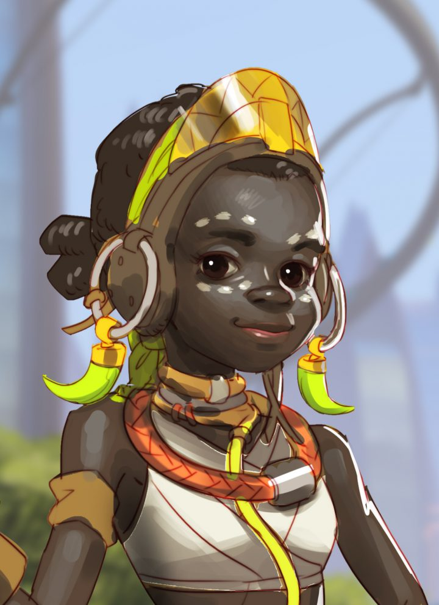

人物紹介
| 画像 | プロフィール | ||
|---|---|---|---|
| 本名 | オリーサ | ||
| 職業 | ガーディアン・ロボット | ||
| 声優 | Cherrelle Skeete/種﨑敦美 | ||
| ゲーム内役割 | タンク | ||
| 出身 | ヌンバーニ | ||
| 年齢 | 製造から1か月 | ||
| 関係者 | エフィ・オラデレ(製作者) | ||
- その他
-
武装(アビリティ)
- フュージョン・ドライバー
- フォーティファイ
- ストップ！
- プロテクティブ・バリア
- スーパーチャージャー
-
ストーリー
ヌンバーニを守るために配備された警備ロボット「OR15」は、その使命を全うすることなく退役した。
OR15のパーツを流用して造られたオリーサは、ヌンバーニの新たな希望だ。だが、まだまだ学ぶべきことは多い。
ヌンバーニに住む天才発明少女エフィ・オラデレが作成したケンタウロス型のガーディアン・ロボット。カメラアイは遮光器土偶型。
オムニック・クライシス時の「オーアール・フォーティーン・アイディーナ (OR14 Idina) 」を改良した「オーアール・フィフティーン (OR15) 」が
ベースモデル。
空港襲撃事件が発生した際にドゥームフィストによって破壊されたOR15を改造して作られた。製造されて1ヶ月という最年少のヒーロー。
オリーサはすでに様々な分野で街の役に立ってはいるが、経験不足ゆえの失敗も多い。
しかし、失敗の度に改良を重ねるエフィと、それに応える高い適応能力を見せるオリーサ、
一人と一体は力を合わせて徐々にその能力を開花させている。
人々を守る守護者として、オリーサは最初の一歩を踏み出した。
まだまだ世界と彼女自身の機能について学ぶべきことは多いが、常に前向きなエフィの導きと、
オリーサの中で高まりつつある正義感があれば、ヌンバーニの安全は守られ続けるだろう。
(オリーサは一応性別は女性らしいので「彼女」と呼ぶことがあります。)
詳しくは公式ページ
| 画像 | プロフィール | ||
|---|---|---|---|
|
 | 本名 | エフィ・オラデレ | |
| 職業 | 発明者 | ||
| 声優 | 不明 | ||
| ゲーム内役割 | 無し | ||
| 出身 | ヌンバーニ/ナンバニアン | ||
| 年齢 | 11歳 | ||
| 関係者 | Bolaji Oladele（父） Fola Oladele（母親） Yewande（叔母） Dayo（いとこ） Bisi（いとこ） | ||
- その他
-
ストーリー
オムニック・クライシス前から、ナイジェリアの巨大オムニウムではOR14「アイディーナ」モデルが量産されていた。
戦争後はクライシス時に配備された他のモデル同様、生産終了となったが、20年後、ヌンバーニは外部の脅威から街を守るべく
OR14プログラムを再生。
しかし、新たなモデル「OR15」はドゥームフィストの襲撃により壊滅し、すぐに現役を退いた。
襲撃後、プログラムはすぐに白紙に戻され、市当局は残りのOR15を全て売却。
一部パーツはロボット工学で数々の実績をあげ、アダウェ基金の助成金を獲得した11歳の天才少女エフィ・オラデレに購入された。
両親の理解も手伝い、エフィは助成金の大半を退役したOR15一体の購入に費やした。
エフィはOR15をアップグレードすれば、ヌンバーニの安全を守ってくれると考えたのだ。
エフィはOR15を修理し、彼女自らが設計した人格コアを搭載――
そして、ヌンバーニの新たなヒーローは「オリーサ」と名付けられた。
詳しくは公式ページ -
インタビュー記事の一部(余談)
「ヌンバーニ・スポットライト」という記事で書かれた、受賞でアダウェ基金の助成金を獲得したエフィのインタビューの一部を紹介します。
―なぜロボット工学と人工知能の道を選んだのですか？
昔からずっと興味を持っていたんです。お母さんとお父さんに初めてロボットのセットをもらったとき、小さいドローンを造ることに夢中になって。
うまくなってきたら、今度はお家のお手伝いをやってくれるロボットを造り始めたんです。
両親は「ずる」だって言うけど、そんなことないですよね（笑）
私は、みんなの生活を助ける物を造りたいんです。OR15みたいな、人々の安全を守るロボットを造り上げることが夢ですね！
―その歳ですでに数多くの実績をあげていますが、何か秘密はあるのでしょうか？
特にそのようなものはないですが、とにかくやるだけです！でも、私の場合は両親が反対しなかったので良かったとは思っています。
ロボット造りは汚れることもあるし、お金がかかるから。
| 画像 | プロフィール | ||
|---|---|---|---|
| 本名 | アカンデ・オグンディム | ||
| 職業 | 傭兵 | ||
| 声優 | Sahr Ngaujah/中田譲治 | ||
| ゲーム内役割 | ダメージ | ||
| 出身 | ナイジェリア/オヨ州 | ||
| 年齢 | 45歳 | ||
| 所属 | タロン | ||
- その他
-
武装(アビリティ)
- ハンド・キャノン
- サイズミック・スラム
- ライジング・アッパーカット
- ロケット・パンチ
- メテオ・ストライク
-
ストーリー
長い沈黙を破り、ついに脱獄を果たしたドゥームフィスト。
彼は戦いこそが人類をさらに強くすると信じ、世界に新たな争いの火種を撒こうとしている。
格闘技が得意な男性。スキンヘッドで右腕にガントレットを装備している。
名家の生まれで義肢設計会社を営んでいたが、オムニック・クライシスにより右腕を失う。
「2代目ドゥームフィスト」の「アキンジデ・アディエミ」の誘いでテロ組織・タロンに加入した。
その後、アキンジデを殺害しガントレットを奪い3代目のドゥームフィストになった。
新たなドゥームフィストとなったオグンディムは、タロンでの地位を確実なものとし、彼らが望む「世界を巻き込む戦争」を起こすため暗躍した。
しかし、その計画が実を結ぶ前に、オグンディムはトレーサーとウィンストン、ゲンジらで結成されたオーバーウォッチのストライクチームに
敗北する。
最高度のセキュリティを誇る監獄に収監されたオグンディムは、ただ静かに蒔いた種が芽吹くときを待った。
そして、ついに彼は帰還すべき時が来たことを悟る。
脱獄後、新たに配備されたヌンバーニの警備ロボットOR15達を一方的に破壊し、ドゥームフィストの証であるガントレットを取り戻した。
今、オグンディムはタロンの重鎮としてかつての座に返り咲き、再び世界を混乱の渦に巻き込もうとしている。
詳しくは公式ページ